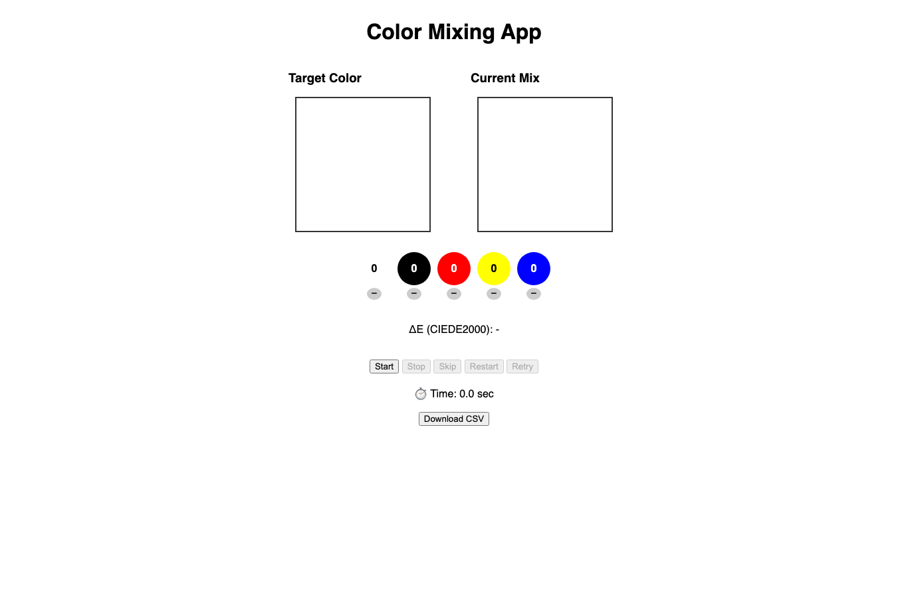
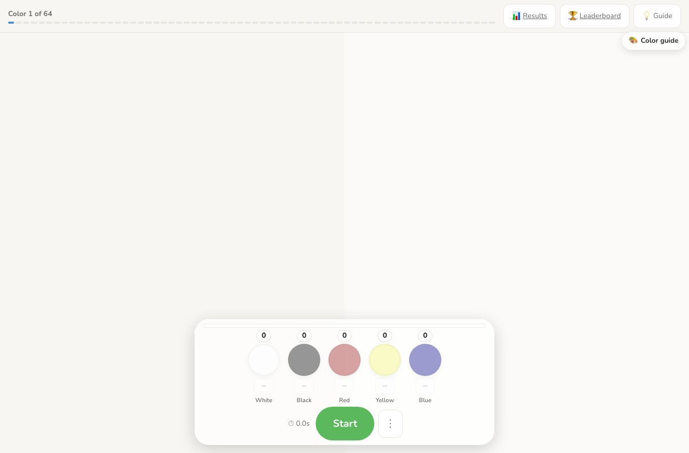
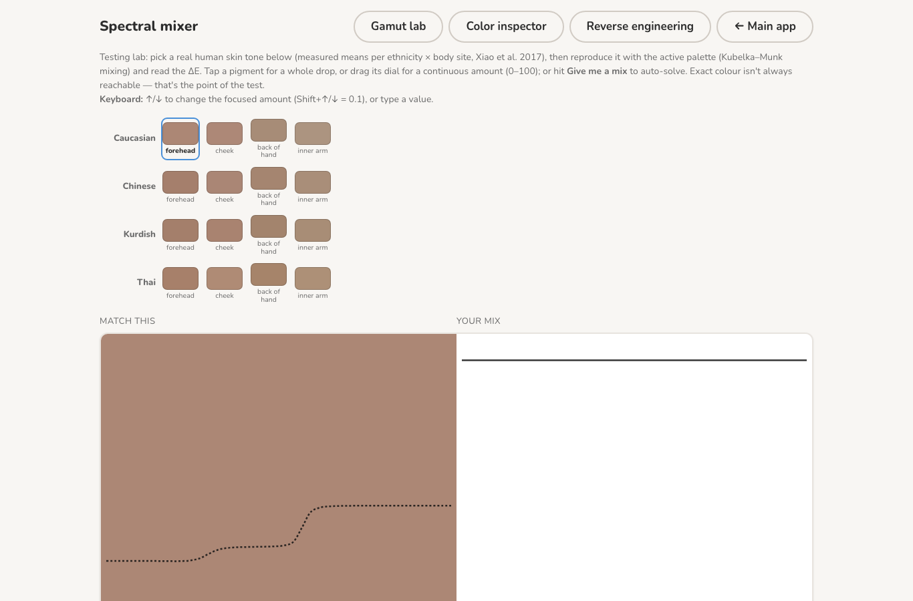
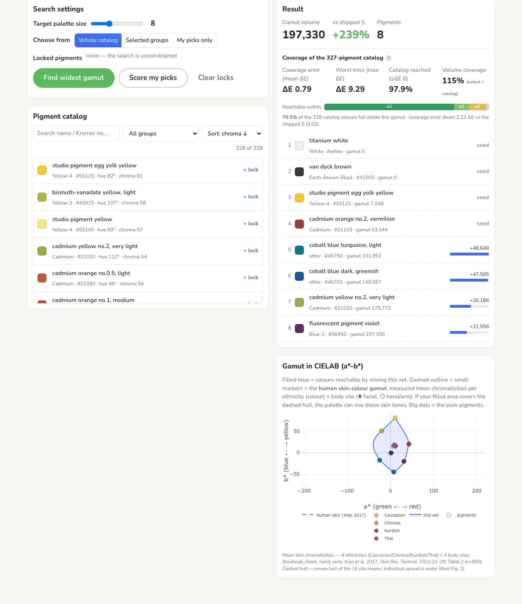

327 measured pigmentsgamut labalready aimed at human skin
Where this came from
From a prototype to a spectral instrument

2025 · first prototype The original main screen — two boxes, raw swatches.

Now · main screen Full-bleed canvas, floating dock, Mixbox mixing.

Now · spectral mixer Measured pigments, Kubelka–Munk, real skin targets.
168 commits · 15 months. The goal sharpened from “match a colour” to “match real human skin.”
The big idea
Screens add light. Paint subtracts it.
What a “color” actually is here
Each color is a light-fingerprint, not just “reddish”
titanium white · whitecassel brown · blackcadmium orange no.1 · redbismuth-vanadate yellow · yellowcobalt blue dark · blue
These five — one pigment per painter primary — are the widest-gamut set the optimizer found across the 327-pigment catalog. Palettes scale 5 / 8 / 10 / 12 / 16.
Skin gamut: Xiao et al. 2017, Skin Res. Technol. 23(1) — 4 ethnicities × 4 body sites (n=960).

Honesty beat — say it before they catch it
On the playground, the target curve is a guess, not a measurement
★ The core ask — getting K and S separately
White card + black card = the trick that unlocks real pigment data
thin film over a card of reflectance Rg:
R = [1 − Rg·(a − b·coth(bSX))] / [a − Rg + b·coth(bSX)] a = 1 + K/S, b = √(a²−1)
black (Rg≈0) + white (Rg≈1) → solve K(λ), S(λ) ⇒ two-constant mix: Kmix=ΣcK, Smix=ΣcS